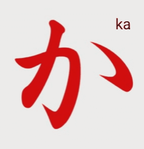
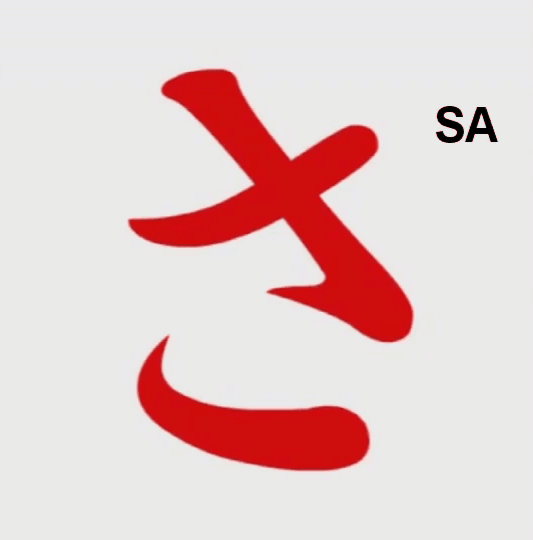
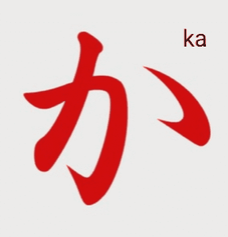
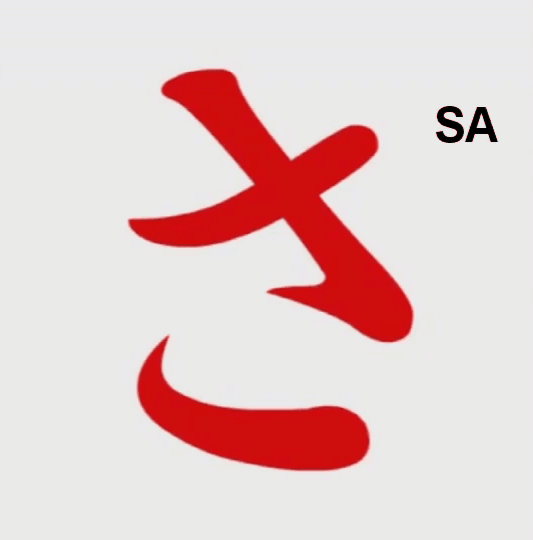

Belajar Hiragana
Hiragana adalah salah satu dari tiga sistem penulisan dalam bahasa Jepang. Hiragana digunakan untuk menulis kata-kata asli Jepang, partikel, dan akhiran kata kerja.
Tabel Hiragana Lengkap
Berikut adalah tabel Hiragana yang terdiri dari 46 huruf dasar:
| あ (a) | い (i) | う (u) | え (e) | お (o) |
|---|---|---|---|---|
| か (ka) | き (ki) | く (ku) | け (ke) | こ (ko) |
| さ (sa) | し (shi) | す (su) | せ (se) | そ (so) |
| た (ta) | ち (chi) | つ (tsu) | て (te) | と (to) |
| な (na) | に (ni) | ぬ (nu) | ね (ne) | の (no) |
| は (ha) | ひ (hi) | ふ (fu) | へ (he) | ほ (ho) |
| ま (ma) | み (mi) | む (mu) | め (me) | も (mo) |
| や (ya) | - | ゆ (yu) | - | よ (yo) |
| ら (ra) | り (ri) | る (ru) | れ (re) | ろ (ro) |
| わ (wa) | - | - | - | を (wo) |
| ん (n) | - | - | - | - |
Dakuon dan Handakuon
Dakuon adalah huruf Hiragana yang memiliki tanda tenten (〃), sedangkan Handakuon memiliki tanda maru (゜) yang mengubah pelafalannya.
| Huruf | Romaji |
|---|---|
| が | ga |
| ぎ | gi |
| ぐ | gu |
| げ | ge |
| ご | go |
| ざ | za |
| じ | ji |
| ず | zu |
| ぜ | ze |
| ぞ | zo |
| だ | da |
| ぢ | ji |
| づ | zu |
| で | de |
| ど | do |
| Huruf | Romaji |
|---|---|
| ば | ba |
| び | bi |
| ぶ | bu |
| べ | be |
| ぼ | bo |
| ぱ | pa |
| ぴ | pi |
| ぷ | pu |
| ぺ | pe |
| ぽ | po |
Yōon (Huruf Gabungan)
Yōon adalah kombinasi huruf Hiragana yang menggunakan huruf kecil (ゃ, ゅ, ょ) untuk menghasilkan suara gabungan.
| Huruf | Romaji |
|---|---|
| きゃ | kya |
| きゅ | kyu |
| きょ | kyo |
| しゃ | sha |
| しゅ | shu |
| しょ | sho |
| ちゃ | cha |
| ちゅ | chu |
| ちょ | cho |
| にゃ | nya |
| にゅ | nyu |
| にょ | nyo |
| ひゃ | hya |
| ひゅ | hyu |
| ひょ | hyo |
| みゃ | mya |
| みゅ | myu |
| みょ | myo |
| りゃ | rya |
| りゅ | ryu |
| りょ | ryo |
 


